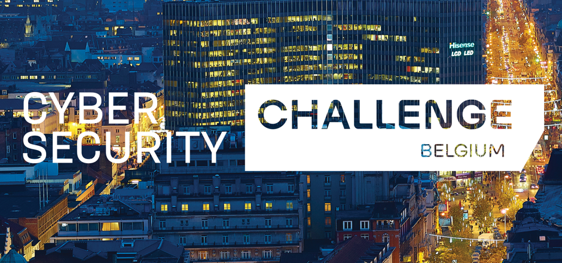
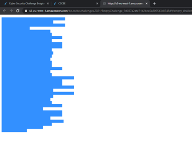

Op dinsdag negen maart en woensdag tien maart 2021 vond de Cyber Security Challenge plaats.
Doordat Covid-19 ons leven op het moment beperkt vond dit evenement uiteraard online plaats.
Met volle teugen keek ik uit naar deze dagen. Gedurende de opleidingsonderdelen Security Essentials
en Security Advande d maakte ik kennis met heel wat aspecten rondom CTF-platformen.
Ik leerde werken met OWASP, Juice Shop en Metasploitable. Hierin kreeg ik de kans om challenges op te lossen.
Challenges waarmee ik te maken kreeg gedurende deze opleidingsonderdelen waren onder andere het uitvoeren van XSS
(Cross Site Scripting) en het inloggen met het administratoraccount door middel van SQL injection.
Verder heb ik ook met tools leren werken binnen Kali Linux.
Ik leerde met Kali Linux verborgen bestanden te vinden in afbeeldingen en videomateriaal.
Ik keek er met volle teugen naar uit want ik ben graag bezig met het security aspect.
Daarnaast is het ook een leuke uitdaging om zelf eens aan te slag gaan om een CTFS-platform (Capture The Flag Strike) op te lossen.
Ik heb heel wat zaken bijgeleerd en vond het zeker en vast de moeite waard.
Vervolgens was het soms wel een stuk pittiger dan wat mijn kennis betreft.

Een flag dat ik oploste was "Empty challenge". Ik vond een link met een tekstbestandje dat me naar een webpagina leidde.
Deze pagina was op het eerste zicht leeg, daarom ook “empty challenge”. Dit vond ik enorm raar dus gebruikte ik sneltoetsen
zoals “control – a” om zo te kijken of er misschien tekst te zien was dat verborgen / niet leesbaar zou zijn.
Al snel bleek mijn gevoel juist te zitten.
Ik kopieerde en plakte de “verborgen” tekst in een Word-document en gebruikte de knop “Alles weergeven” (het ankertje)
om zo na te gaan wat er zou staan.
Nadien zag ik heel wat puntjes en tabs verschijnen wat een zeer interessant gegeven was.
Ik vond dus twee symbolen (punt en tab) dus dacht ik aan het binair stelsel (twee cijfers: nul en één).
Ik verving al de tabs naar een nul en al de puntjes naar een één. Hiervoor maakte ik gebruik van de functie “Zoeken en vervangen”
in Word.
Een volgend vermoeden dat ik kreeg was dat wanneer al de binaire getallen omgezet werden naar ASCII
waardes dat dan de flag tevoorschijn zou komen.
Mijn vermoeden klopte en had de flag gevonden, namelijk CSC{e4e8d5ce6e5dfe0bb0c03fe87b86a97}